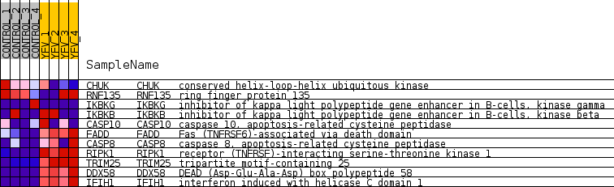
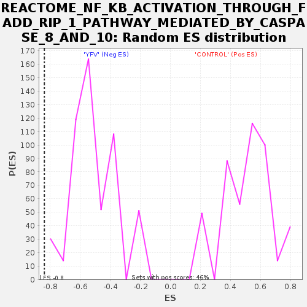

Profile of the Running ES Score & Positions of GeneSet Members on the Rank Ordered List
| Dataset | MATRIZ_GSE99081_collapsed_to_symbols.gsea_CLASE_99081.cls#CONTROL_versus_YFV |
| Phenotype | gsea_CLASE_99081.cls#CONTROL_versus_YFV |
| Upregulated in class | YFV |
| GeneSet | REACTOME_NF_KB_ACTIVATION_THROUGH_FADD_RIP_1_PATHWAY_MEDIATED_BY_CASPASE_8_AND_10 |
| Enrichment Score (ES) | -0.8384475 |
| Normalized Enrichment Score (NES) | -1.6545041 |
| Nominal p-value | 0.0 |
| FDR q-value | 0.047754187 |
| FWER p-Value | 0.778 |
| SYMBOL | TITLE | RANK IN GENE LIST | RANK METRIC SCORE | RUNNING ES | CORE ENRICHMENT | |
|---|---|---|---|---|---|---|
| 1 | CHUK | conserved helix-loop-helix ubiquitous kinase | 2761 | 0.373 | -0.1446 | No |
| 2 | RNF135 | ring finger protein 135 | 3113 | 0.331 | -0.1437 | No |
| 3 | IKBKG | inhibitor of kappa light polypeptide gene enhancer in B-cells, kinase gamma | 5852 | 0.088 | -0.3063 | No |
| 4 | IKBKB | inhibitor of kappa light polypeptide gene enhancer in B-cells, kinase beta | 12590 | -0.253 | -0.7042 | No |
| 5 | CASP10 | caspase 10, apoptosis-related cysteine peptidase | 12855 | -0.283 | -0.7011 | No |
| 6 | FADD | Fas (TNFRSF6)-associated via death domain | 15085 | -0.649 | -0.7941 | Yes |
| 7 | CASP8 | caspase 8, apoptosis-related cysteine peptidase | 15454 | -0.808 | -0.7615 | Yes |
| 8 | RIPK1 | receptor (TNFRSF)-interacting serine-threonine kinase 1 | 15848 | -1.206 | -0.7032 | Yes |
| 9 | TRIM25 | tripartite motif-containing 25 | 16114 | -2.360 | -0.5582 | Yes |
| 10 | DDX58 | DEAD (Asp-Glu-Ala-Asp) box polypeptide 58 | 16212 | -4.043 | -0.2877 | Yes |
| 11 | IFIH1 | interferon induced with helicase C domain 1 | 16219 | -4.231 | 0.0012 | Yes |

